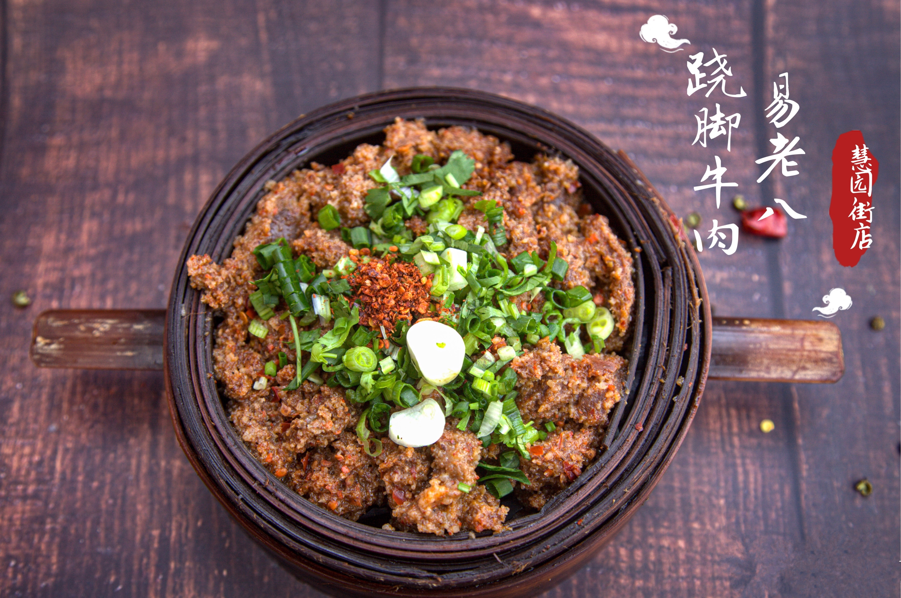
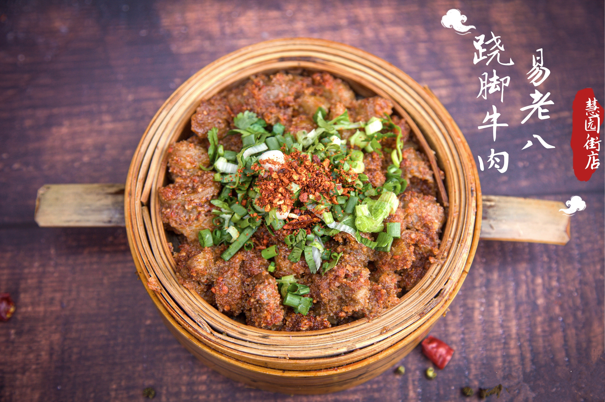
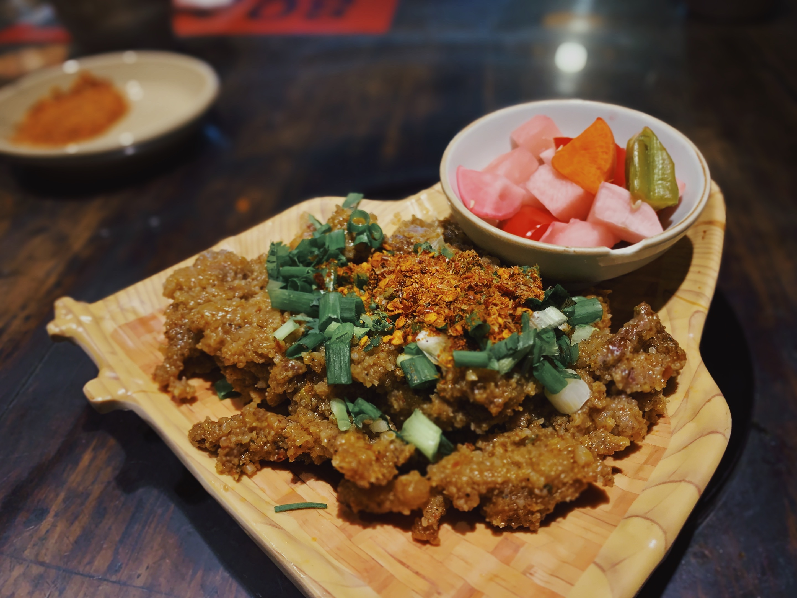

  
笼蒸牛肉做为乐山的美食之一，其制作方法如下：
1. 备料 牛肉（不含筋）切片 老姜斩碎 加鸡精 味精 辣椒粉 白酒 四川豆瓣酱 白糖 老姜 生菜籽油 拌匀 码味十分钟；2. 加入米粉 超市里买蒸肉粉 不要买太细的 粗点的口感更好 肉眼比较能分出粗细；3. 搅拌均匀 确保每一道片牛肉两面都沾满蒸肉粉 湿湿的 不能太干；4. 水开后将牛肉放入竹制蒸笼，大火十五分钟，这时候吃起是比较有筋道的版，如果喜欢粑濡一些 ，可以再多蒸几分钟，没有竹制的蒸笼，不锈钢的也可以；5. 将蒸好的牛肉装盘权 撒上葱花 香菜 再撒辣椒粉 花椒粉 和匀 哇 味道巴适惨了！